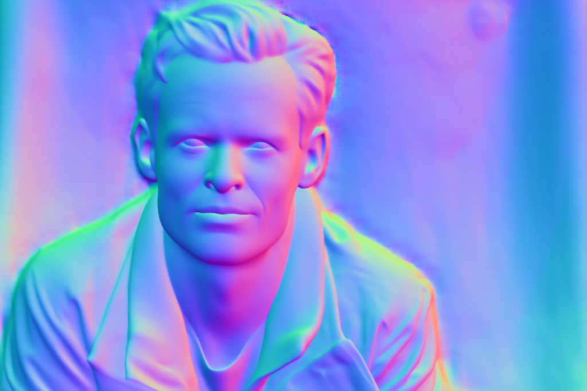
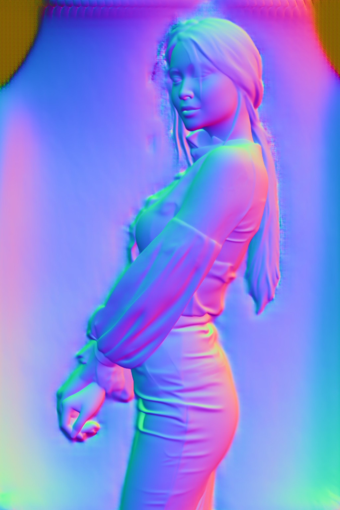
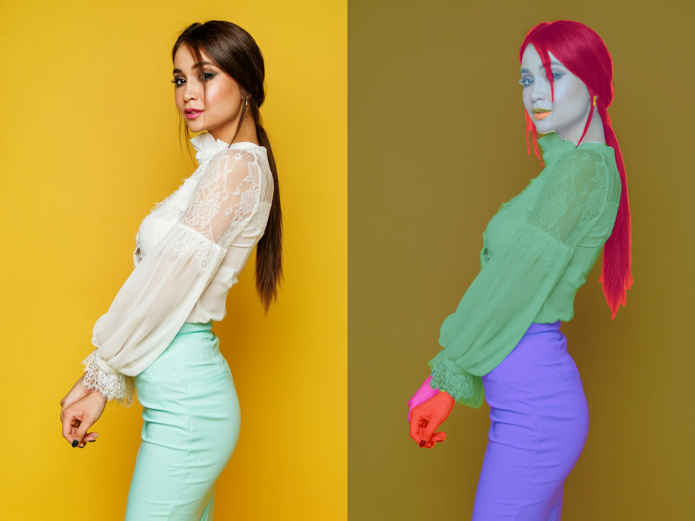
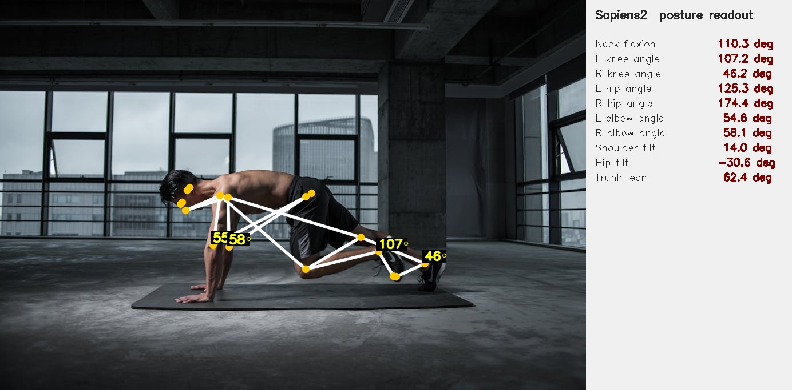
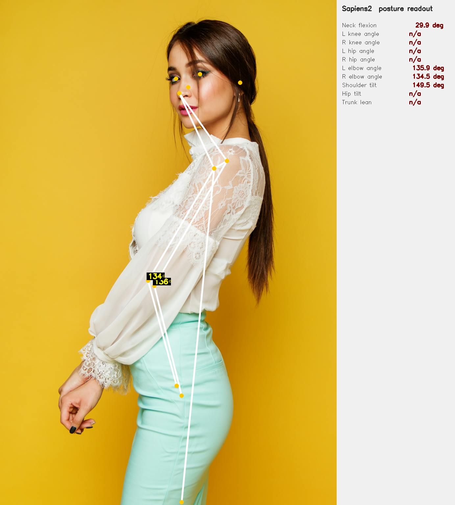
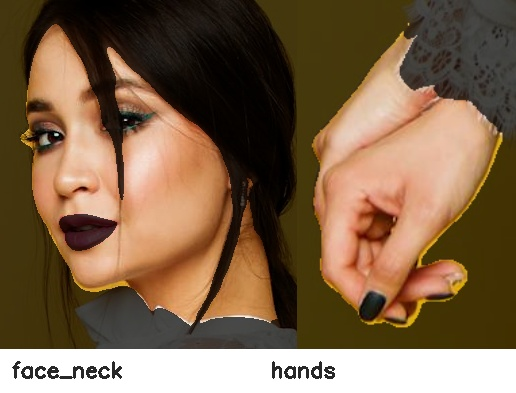
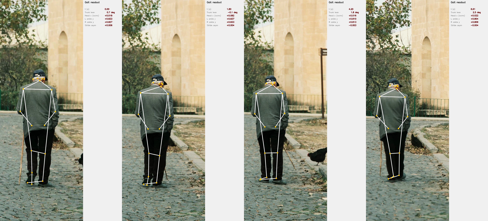
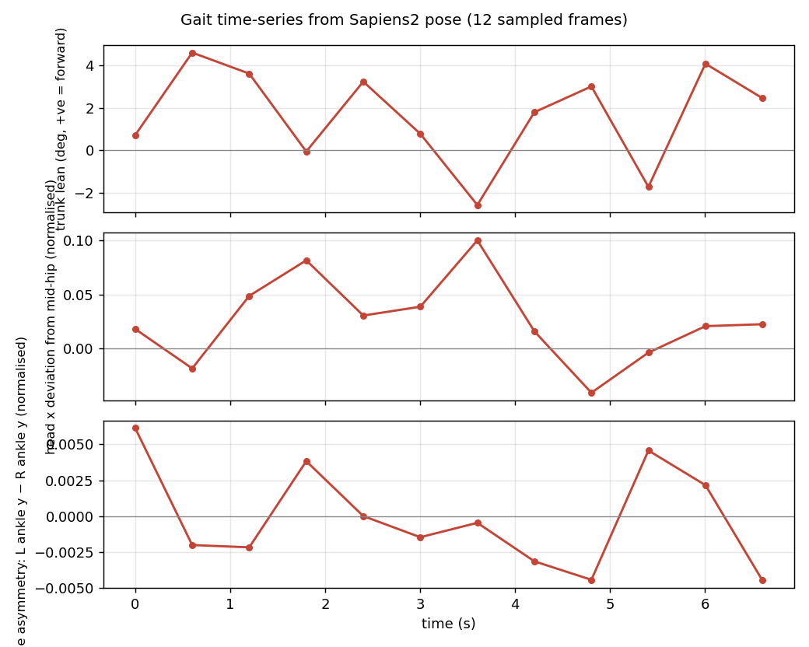
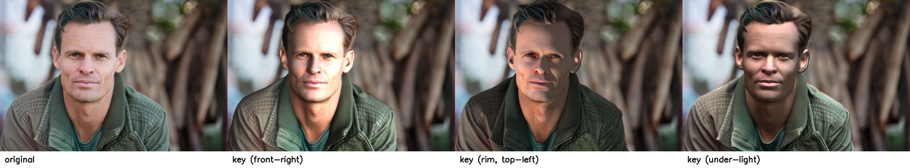
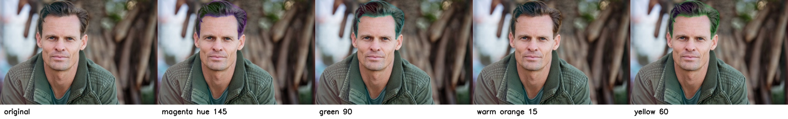

Sapiens2 is Meta’s follow-up to the original Sapiens, released two days ago (2026-04-23) and accepted at ICLR 26. It’s a family of vision transformers pretrained on 1 billion human images at up to 4K, with task heads for four human-centric problems:
| Task | Output | Sizes available |
|---|---|---|
| Pose | 308 2D keypoints (body + face + hands + feet) | 0.4B, 0.8B, 1B, 5B |
| Body-part segmentation | 29-class per-pixel labels (face, hair, hands, …) | 0.4B, 0.8B, 1B, 5B |
| Surface normals | per-pixel unit vectors in camera frame | 0.4B, 0.8B, 1B, 5B |
| Pointmap | dense 3D point per pixel | 0.4B, 0.8B, 1B, 5B |
The official inference path is CUDA-only (mmpose-style multi-GPU job sharding, plus an mmdet person detector for pose). I cloned the repo, swapped device='cuda:0' for device='mps', and (for pose) bypassed the detector with a full-image bounding box. It just works. 0.4B forward pass: ~0.6–1.6 s per 1024×768 image on an M2 Max, no code changes beyond the device string.
The interesting question isn’t “does it run on a Mac” — it’s “what can you measure with it once it does?” This post leans toward health-relevant primitives:
- Joint-angle readout — knees, hips, elbows, neck flexion, trunk lean from pose keypoints.
- Body symmetry — left/right shoulder and hip alignment.
- Gait analysis on video — trunk-lean and stride-asymmetry time-series across a 12-frame walking clip.
- Tele-dermatology ROI — clean Face/Neck and hand crops from the seg head, ready to feed a downstream lesion classifier.
- Foreground-only relighting — Lambertian shading using normals + seg mask.
- Selective hair recolour — HSV rotation confined to the seg “Hair” class.
None of these are clinical claims. They are measurement primitives — the numbers a screening protocol or a physiotherapist would use to decide what to do next.
Code:
posts/sapiens2/scripts/—run_normal.py,run_seg.py,run_pose.py,relight.py,apps.py,health.py,gait_video.py.
Setup
# Pure-PyTorch package, no mmcv, no custom CUDA extensions.
git clone --depth=1 https://github.com/facebookresearch/sapiens2 /tmp/sapiens2
pip install -e /tmp/sapiens2
# Three task checkpoints (smallest size: 1.6 GB each)
hf download facebook/sapiens2-normal-0.4b sapiens2_0.4b_normal.safetensors --local-dir ~/sapiens2_host/normal
hf download facebook/sapiens2-seg-0.4b sapiens2_0.4b_seg.safetensors --local-dir ~/sapiens2_host/seg
hf download facebook/sapiens2-pose-0.4b sapiens2_0.4b_pose.safetensors --local-dir ~/sapiens2_host/poseThe bundled vis_*.py scripts assume cuda:0 and 8 GPUs. The model itself doesn’t care — init_model() accepts any device string. For pose, the bundled driver also calls init_detector from mmdet; my run_pose.py skips that and passes the whole image as a single bounding box, which is fine when there’s one centred subject.
Cold load + one inference takes ~5–7 s the first time per head; subsequent calls are sub-second:
| Head | Image | Forward (warm) |
|---|---|---|
normal-0.4b |
1024×683 | 0.85 s |
normal-0.4b |
1024×1536 | 0.87 s |
seg-0.4b |
1024×683 | 0.69 s |
seg-0.4b |
1024×1536 | 0.55 s |
pose-0.4b |
1024×683 | 1.14 s |
pose-0.4b |
1024×1536 | 1.13 s |
That is fast enough for interactive use in a Streamlit / Gradio app. Not video-realtime, but I run pose on 12 sampled video frames below and the whole pipeline finishes in ~17 s.
What the three heads produce

person1. The model gives a unit normal at every pixel; magenta points toward the camera, greens to the right.
person2. Sapiens2 was trained on humans, so the backdrop normals are hallucinated; the seg head gives you the foreground mask to filter them.
Application 1 — Joint-angle readout
For every body keypoint b with neighbours a and c (e.g. knee = hip → knee → ankle), we compute
\[\theta_b = \arccos\!\left(\frac{(a-b)\cdot(c-b)}{\|a-b\|\,\|c-b\|}\right).\]
Plus a few derived quantities: neck flexion (the angle between the mid-shoulder→nose vector and the vertical), shoulder tilt, hip tilt, and trunk lean. All in health.py, all dropouts on missing keypoints become NaN.
Run on person4 (mountain-climber on a yoga mat — picked specifically because every joint angle is informative):

The numbers — 46° right knee, 107° left knee, 174° right hip — are the kind a physiotherapist would read off a printout. They are measurements, not assessments, but they are the numerical inputs that a screening protocol turns into “needs follow-up” / “fine”.
The same readout on person2 (side-view portrait — most lower-body keypoints are occluded, so they correctly drop out as n/a):

What this is good for in practice:
- Tele-physiotherapy — patient performs an exercise on camera; the readout produces joint-angle measurements that a remote clinician interprets.
- Workplace ergonomics — an office worker hits a “snapshot” button; the readout flags neck-flexion > 30° as a long-term repetitive-strain risk.
- Sports / strength training — squat depth from knee/hip angles, deadlift hinge from trunk lean. Same primitive, different rubric.
What it is not good for: anything that needs sub-degree precision, anything that needs the depth (z) coordinate, or anything that needs the camera intrinsics. For those you want the pointmap head + a calibrated camera.
Application 2 — Body symmetry
Three quantities, all read directly off shoulder + hip keypoints:
- Shoulder tilt — the angle of the line connecting left and right shoulders (relative to horizontal). For person4 we get 14°, which is huge but matches the photo (he is leaning forward into a plank).
- Hip tilt — same idea for the hips.
- Trunk lean — angle between the shoulder–hip axis and the vertical.
Side-by-side or symmetry checks are useful for scoliosis screening, post-stroke posture monitoring, and musculoskeletal assessment after injury. The key word is screening: these are signals that suggest someone should be seen by a clinician, not diagnoses.
Application 3 — Tele-dermatology ROI extraction
The seg head’s Face_Neck and Right_Hand/Left_Hand classes are essentially free skin-region masks. Cropping just those classes (with a small margin and the background dimmed) gives you the inputs a downstream lesion classifier expects. No new model needed:
m = np.isin(seg, [3]) # Face_Neck class id
ys, xs = np.where(m)
crop = img[ys.min():ys.max(), xs.min():xs.max()]The skin-region crops for person2 look like this:

In a real tele-derm pipeline this becomes the first stage of a two-stage system: Sapiens2 to find skin → a domain-trained lesion classifier (ISIC or similar) on the crop. The Sapiens2 step is doing the work that a dermatologist would otherwise do manually — crop me the patch with the lesion.
Application 4 — Gait analysis on video
The clip is an 8-second 4K vertical of an elderly man walking with a cane (free Pexels stock, #14801276) — a classic clinical-screening scenario. I sample every 18th frame (12 frames over ~7 s), crop a vertical strip around the subject so he fills enough of the input that the pose lands, and run pose-0.4b on each crop.
Four sampled frames, with the live readout

Time-series
For each frame I compute three quantities:
- Signed trunk lean — \(\arctan2\) of the horizontal vs vertical components of the mid-shoulder→mid-hip vector. Positive ≈ leaning right (subject’s right, camera’s left).
- Head x deviation — horizontal offset of the nose from the mid-hip, normalised by frame width. Catches lateral sway.
- Stride asymmetry — difference in normalised vertical position of the two ankles. A periodic signal would be ideal walking gait; a flat signal with a bias suggests an asymmetric step.

Annotated overlay video
The whole pipeline — model load + 12-frame inference + plotting — runs in ~22 s on M2 Max with no GPU. That is fast enough that you could rebuild the time-series in real time during a tele-rehab session, just by sampling at 1–2 fps.
What this almost does:
- A real clinical gait analysis system would track the foot strike events directly from the ankle-y signal (zero-crossings of the velocity), compute stride length from the change in horizontal position between strikes, and report cadence (strides/min). All three derive trivially from the per-frame Sapiens2 outputs above.
- Adding the seg head’s
Lower_Clothingand shoe classes lets you isolate the leg silhouette — useful when the keypoints are noisy and you want a backup signal.
What it doesn’t do:
- No 3D. All measurements are in the 2D image plane. A stride that’s foreshortened by walking away from the camera will look shorter than it is.
- No cane detection. Cane usage is visible in the strip but not measured. You’d add a hand-held-object detector or use a per-frame VLM call for that.
Application 5 — Foreground-only Lambertian relighting
Surface normals + foreground mask + a chosen light direction = textbook Lambertian shading, applied only to body pixels:
\[\mathrm{relit}(p) = I(p)\cdot\bigl(0.25 + 0.75\cdot\max(0,\,\mathbf{n}(p)\cdot\mathbf{l})\bigr)\cdot\mathrm{tint}.\]

person1 under three light directions. The relighting is confined to the seg-foreground, so the backdrop is untouched and there’s no halo. The shading change reads correctly as 3D — right-cheek shadow under the front-right key, left-rim highlight under top-left, inverted shadow under the chin for under-light.In a clinical context this is the mechanism behind a standardised photography pipeline — patient takes a picture under whatever ambient light, and the downstream system relights to a canonical orientation before passing the image to a classifier (or to a human reviewer who needs a fair before-and-after comparison).
Application 6 — Selective hair recolour
A 5-line HSV rotation confined to the seg “Hair” class — included here only because it is the kind of thing UX teams ask for from the same primitives a clinical pipeline uses. Same plumbing, different rubric:

What I’d reach for next
Concrete extensions that turn the primitives above into real screening pipelines:
| Pipeline | Primitive used | Add |
|---|---|---|
| Tele-physiotherapy joint-angle log | joint angles | a per-exercise angle target + tolerance |
| Workplace ergonomic snapshot | neck-flexion + trunk lean | a webcam-loop daemon and threshold alerts |
| Scoliosis screening (kids) | shoulder tilt + hip tilt + trunk lean | a panel-of-N-frames stability check |
| Tele-dermatology triage | seg-derived skin ROIs | an ISIC-trained lesion classifier on the crop |
| Fall-risk gait screen | trunk-lean + stride-asymmetry time-series | longer videos + foot-strike detection |
| Standardised before/after photography | normals-based Lambertian relight + foreground mask | a fixed light direction and tint |
Caveats
- Out-of-distribution background. The normal head emits “something” everywhere; never trust it on background pixels. Use the seg head’s
class > 0mask first. - Pose without a person detector. The full-image bbox shortcut works when there’s one centred subject. For multiple people or off-centre subjects you need a real detector — the bundled mmdet RTMDet works on CUDA but is painful to install on Apple Silicon. A standalone YOLO from
ultralyticsis a simpler swap. - No 2D→3D lift. All angles are 2D image-plane angles. A subject angled toward or away from the camera will produce systematically biased readings. Use the pointmap head (or an explicit camera calibration) when you need actual anatomy-frame angles.
- License. Sapiens2 is released under a custom Meta licence — read
LICENSE.mdbefore using clinically or commercially. The Pexels photos and the elder-walking video are under the Pexels free licence. - Larger models. Everything above uses 0.4B. The 0.8B / 1B / 5B variants exist and should give crisper edges and more robust low-confidence keypoints. The 5B will be slow on MPS — for that one you want CUDA.
Links
- Sapiens2 model collection: huggingface.co/facebook/sapiens2
- Sapiens2 code: github.com/facebookresearch/sapiens2
- Project page: rawalkhirodkar.github.io/sapiens2
- Original Sapiens (v1): arXiv:2408.12569
- Photos used: Pexels #1300402 · Pexels #2065200 · Pexels #2294361
- Video used: Pexels #14801276